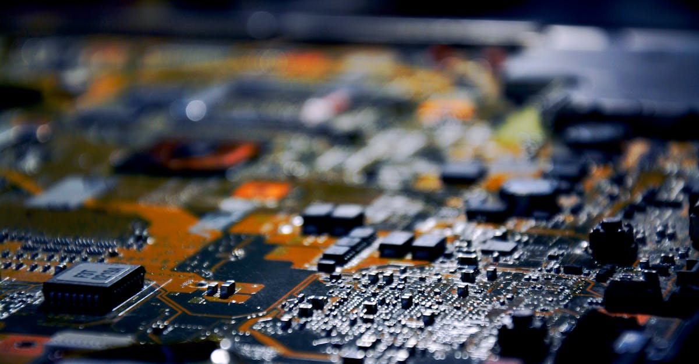

L'Explosion de l'IA : Un Tremblement de Terre Technologique
La révolution de l'intelligence artificielle (IA) n'est plus une simple promesse futuriste ; elle est une réalité palpable qui redessine le paysage économique mondial. Au cœur de cette transformation, l'Asie, et plus particulièrement des hubs technologiques clés, connaît une effervescence sans précédent. Ce qui a commencé comme un intérêt croissant pour les applications de l'IA, notamment dans le domaine du trading algorithmique et de l'analyse prédictive, s'est rapidement mué en une demande massive pour les composants qui rendent tout cela possible : les semi-conducteurs. Les entreprises qui développent des algorithmes sophistiqués, capables d'analyser des volumes astronomiques de données et d'exécuter des transactions à une vitesse fulgurante, dépendent intrinsèquement de la puissance de calcul fournie par ces puces. Le rallye boursier observé dans ce secteur n'est donc pas une simple bulle spéculative, mais le reflet tangible d'une demande fondamentale croissante. Les investisseurs, autrefois sceptiques, se ruent désormais sur les actions des fabricants de puces, anticipant une croissance exponentielle alimentée par l'appétit insatiable des centres de données et des développeurs d'IA. Les chaînes d'approvisionnement, conçues pour des cycles de demande plus prévisibles, sont mises à rude épreuve, créant des opportunités mais aussi des défis considérables. Comprendre cette dynamique est essentiel pour naviguer dans ce nouveau paradigme, où l'IA ne se contente pas de piloter des voitures autonomes ou de générer du texte, mais influence directement les flux financiers mondiaux et les cours des actions des entreprises les plus stratégiques.
👉 À lire : Keyence : Bond spectaculaire après des résultats records et un plan de rachat
La Chaîne d'Approvisionnement sous Haute Tension
L'impact de la demande accrue pour l'IA se fait sentir bien au-delà des fabricants de puces de premier plan. La chaîne d'approvisionnement dans son ensemble est désormais soumise à une pression intense. Des fournisseurs de matières premières aux fabricants de composants spécialisés, en passant par les assembleurs et les logisticiens, tous ressentent les remous de ce boom. Les usines tournent à plein régime, souvent au-delà de leur capacité nominale, pour répondre à la demande des géants de la technologie qui construisent de nouveaux centres de données et développent des modèles d'IA toujours plus complexes. Cette surchauffe se traduit par des délais de livraison qui s'allongent, une augmentation des prix des composants et une concurrence féroce pour l'accès aux capacités de production. Les entreprises qui réussissent à optimiser leur chaîne d'approvisionnement, à sécuriser leurs approvisionnements en matières premières critiques comme le silicium ou les terres rares, et à maintenir une flexibilité opérationnelle, se positionnent comme les gagnantes potentielles de cette nouvelle ère. À l'inverse, celles qui peinent à s'adapter risquent de se retrouver à la traîne, incapables de satisfaire la demande et de capitaliser sur cette opportunité historique. L'analogie avec la ruée vers l'or est pertinente : il ne suffit pas d'avoir le potentiel, il faut aussi posséder les outils et la stratégie pour extraire efficacement le précieux métal. Dans ce contexte, la gestion des risques liés à la chaîne d'approvisionnement devient un facteur déterminant pour la réussite des investissements dans le secteur technologique lié à l'IA.
👉 À lire : L'IA, bulle ou révolution ? Core Scientific lève 3,3 Mds $ pour l'avenir.
Les Nouveaux Gagnants : Qui Profite de la Vague IA ?
Dans cette course effrénée à la puissance de calcul, de nouveaux acteurs émergent et consolident leur position. Bien sûr, les fabricants de puces traditionnels comme NVIDIA, AMD ou Intel sont en première ligne, voyant leurs valorisations exploser. Mais l'effet d'entraînement va bien plus loin. Les entreprises spécialisées dans la fabrication d'équipements de production de semi-conducteurs, telles qu'ASML aux Pays-Bas, connaissent une demande record pour leurs machines de lithographie avancées, indispensables à la création des puces les plus performantes. Les fournisseurs de mémoires, cruciaux pour le stockage et le traitement rapide des données nécessaires à l'IA, voient également leurs carnets de commandes se remplir. On observe aussi une montée en puissance des entreprises qui fournissent des solutions d'infrastructure pour les centres de données : refroidissement, alimentation électrique, racks spécialisés. Même les entreprises de logiciels, qui développent les systèmes d'exploitation et les frameworks pour l'IA, bénéficient indirectement de cette dynamique, car plus il y a de puissance de calcul disponible, plus les applications IA peuvent être déployées à grande échelle. Pour les investisseurs avisés, identifier ces gagnants de l'ombre, ces maillons essentiels mais moins médiatisés de la chaîne de valeur de l'IA, peut s'avérer plus rentable que de se concentrer uniquement sur les acteurs les plus évidents. La diversification au sein de cet écosystème est la clé.

L'Impact sur les Marchés Financiers et le Trading Crypto
La frénésie autour de l'IA a des répercussions directes et indirectes sur les marchés financiers mondiaux, y compris le monde volatil des cryptomonnaies. Les flux de capitaux se redirigent massivement vers les entreprises technologiques liées à l'IA, entraînant une volatilité accrue sur les marchés traditionnels. Mais comment cela affecte-t-il le trading de cryptos ? L'IA, en tant que technologie sous-jacente, est de plus en plus utilisée pour développer des stratégies de trading plus sophistiquées. Les algorithmes d'IA peuvent analyser des patterns de marché complexes, identifier des corrélations subtiles entre les actifs traditionnels et les cryptos, et exécuter des transactions à une vitesse et une précision inégalées. Les plateformes de trading qui intègrent des agents IA, capables de surveiller les marchés 24h/24 et 7j/7, gagnent en popularité. Ces agents peuvent réagir instantanément aux nouvelles, aux changements de sentiment du marché, et aux fluctuations de prix, offrant un avantage potentiel significatif dans un marché aussi rapide que celui des cryptos. L'essor de l'IA dans le trading traditionnel peut également influencer le marché des cryptomonnaies par contagion. Lorsque les fonds d'investissement allouent une part plus importante de leur portefeuille à des stratégies basées sur l'IA, ils peuvent également chercher à diversifier vers des actifs numériques via ces mêmes stratégies algorithmiques. La demande accrue pour la puissance de calcul, alimentée par l'IA, pourrait même, à terme, avoir un impact sur la consommation énergétique des réseaux de minage de certaines cryptomonnaies, bien que ce sujet reste complexe et débattu. La synergie entre l'IA et le trading de cryptos est donc une tendance de fond à ne pas négliger.
Les Défis et Risques à Anticiper
Malgré l'euphorie ambiante, il serait imprudent d'ignorer les défis et les risques inhérents à cette révolution de l'IA et à son impact sur la chaîne d'approvisionnement. Premièrement, la concentration du marché. La production de puces avancées est dominée par un nombre très limité d'acteurs, ce qui crée des vulnérabilités. Un incident, qu'il soit géographique, politique ou technique, dans l'une de ces usines clés pourrait avoir des conséquences désastreuses sur l'approvisionnement mondial. Deuxièmement, la volatilité intrinsèque du secteur technologique. Les valorisations actuelles de nombreuses entreprises liées à l'IA sont extrêmement élevées, basées sur des projections de croissance futures. Si ces attentes ne sont pas satisfaites, ou si le rythme d'innovation ralentit, nous pourrions assister à des corrections de marché sévères. Les investisseurs doivent rester vigilants quant à la valorisation des actifs. Troisièmement, les tensions géopolitiques. La production de semi-conducteurs est un enjeu stratégique majeur, et les rivalités entre grandes puissances pourraient entraîner des restrictions commerciales ou des interdictions d'exportation, perturbant davantage la chaîne d'approvisionnement. Enfin, la question de l'accessibilité. La demande croissante pour des puces spécialisées et la complexité de leur production pourraient creuser le fossé entre les grandes entreprises capables d'investir massivement et les plus petites structures, y compris dans le domaine du trading algorithmique. Comme le disait un analyste fictif, "La puissance de calcul est le nouveau pétrole, mais sa production est entre les mains de quelques-uns, ce qui la rend aussi précieuse qu'instable." Ces risques nécessitent une gestion prudente et une diversification stratégique pour les investisseurs.

L'Automatisation du Trading : L'IA à la Rescousse
Dans un monde où la vitesse et la précision sont primordiales, l'automatisation du trading grâce à l'IA devient non plus un luxe, mais une nécessité pour de nombreux investisseurs, y compris ceux actifs sur les marchés des cryptomonnaies. Les agents IA conçus pour le trading sont capables d'exécuter des tâches que les humains ne peuvent pas réaliser efficacement. Imaginez un agent capable de surveiller simultanément des centaines d'actifs, de suivre en temps réel les actualités économiques mondiales, d'analyser le sentiment sur les réseaux sociaux, et de prédire les mouvements de prix potentiels, le tout en quelques secondes. C'est la promesse de l'IA appliquée au trading. Ces systèmes peuvent identifier des opportunités d'arbitrage, gérer les risques en ajustant automatiquement les positions, et exécuter des ordres à des moments optimaux pour maximiser les profits et minimiser les pertes. Pour le trading de cryptomonnaies, où la volatilité peut être extrême et les marchés ouverts 24/7, un agent IA offre un avantage indéniable. Il ne connaît ni la fatigue, ni l'émotion, des facteurs qui conduisent souvent les traders humains à prendre des décisions irrationnelles. L'IA permet de mettre en œuvre des stratégies complexes, comme le trading haute fréquence ou l'analyse prédictive basée sur des modèles d'apprentissage profond, qui seraient impossibles à réaliser manuellement. En exploitant la puissance de ces agents IA, les investisseurs peuvent espérer naviguer plus sereinement dans les méandres des marchés financiers et potentiellement améliorer leurs rendements, tout en libérant du temps pour se concentrer sur d'autres aspects de leur stratégie d'investissement.
Investir dans l'IA : Stratégies pour le Particulier
Face à l'ampleur de la révolution IA et à son impact sur la chaîne d'approvisionnement des semi-conducteurs, comment l'investisseur particulier peut-il s'y positionner ? Plusieurs stratégies s'offrent à lui. La première, la plus directe, consiste à investir dans les actions des fabricants de puces et des entreprises technologiques qui fournissent les infrastructures nécessaires à l'IA. Il peut s'agir de géants établis ou de sociétés plus petites mais spécialisées, offrant un potentiel de croissance plus élevé mais aussi un risque accru. Une analyse approfondie des bilans, des perspectives de croissance et des avantages concurrentiels est indispensable. La deuxième approche consiste à passer par des fonds négociés en bourse (ETF) thématiques. De nombreux ETF se concentrent spécifiquement sur l'intelligence artificielle, la robotique, ou le secteur des semi-conducteurs. Ils offrent une diversification instantanée et réduisent le risque lié à la sélection d'actions individuelles. C'est une option intéressante pour ceux qui souhaitent s'exposer à la tendance IA sans devoir suivre assidûment chaque entreprise. Une troisième voie, plus indirecte mais potentiellement lucrative, est d'investir dans les entreprises qui bénéficient de l'IA sans être directement des fabricants de puces. Il peut s'agir d'entreprises de logiciels, de cybersécurité, ou même de secteurs traditionnels qui adoptent l'IA pour améliorer leur efficacité opérationnelle. Enfin, pour les plus audacieux, l'exploration des cryptomonnaies liées à l'IA, bien que spéculative, peut représenter une opportunité. Ces projets visent souvent à décentraliser ou à améliorer l'accès à la puissance de calcul ou aux données pour l'IA. Quelle que soit la stratégie choisie, une chose est certaine : l'IA n'est plus une simple tendance, c'est un moteur de croissance fondamental qui redéfinit les opportunités d'investissement.
L'Avenir : IA et Trading Algorithmique, une Alliance Inévitable
L'avenir des marchés financiers, y compris celui des cryptomonnaies, sera indissociable de l'intelligence artificielle et du trading algorithmique. La tendance actuelle, marquée par l'explosion de la demande pour les puces et la transformation des chaînes d'approvisionnement, n'est que le début. À mesure que les modèles d'IA deviendront plus sophistiqués, leur capacité à analyser des données complexes et à prendre des décisions éclairées s'accroîtra exponentiellement. Cela signifie que les stratégies de trading manuelles pourraient devenir obsolètes face à la puissance des systèmes automatisés. Les agents IA ne se contenteront pas d'exécuter des ordres ; ils apprendront, s'adapteront et innoveront en permanence, créant de nouvelles formes d'inefficacités de marché que seuls d'autres algorithmes pourront exploiter. Pour les investisseurs, cela implique une adaptation continue. Il ne suffira plus d'acheter et de conserver ; il faudra comprendre comment l'IA façonne les marchés et comment utiliser ces mêmes technologies pour rester compétitif. L'utilisation d'agents IA pour le trading deviendra probablement la norme, offrant une surveillance constante, une exécution rapide et une gestion des risques optimisée, bien au-delà des capacités humaines. Cela pourrait potentiellement réduire la volatilité à long terme, mais augmenter la fréquence des micro-ajustements rapides. L'émergence de l'IA dans la chaîne d'approvisionnement des puces n'est qu'un symptôme de cette transformation plus large. Les entreprises qui maîtrisent l'IA, que ce soit pour la conception de matériel, le développement de logiciels, ou l'exécution de stratégies de trading, seront les leaders de demain. L'alliance entre l'IA et le trading algorithmique est donc une force à considérer sérieusement pour tout acteur souhaitant prospérer dans le paysage financier futur.
Conclusion : Naviguer la Vague IA avec Intelligence
La révolution de l'intelligence artificielle n'est pas une vague passagère ; c'est une marée montante qui remodèle l'industrie technologique, bouleverse les chaînes d'approvisionnement mondiales et crée des opportunités d'investissement sans précédent. L'effervescence autour des semi-conducteurs n'est qu'un des nombreux reflets de cette transformation profonde. Pour les investisseurs, et particulièrement ceux intéressés par le potentiel du trading de cryptomonnaies, comprendre cette dynamique est crucial. L'IA n'est plus seulement un outil d'analyse ou de prédiction ; elle devient un acteur majeur dans l'exécution des stratégies de trading grâce aux agents IA qui opèrent 24h/24. Ces systèmes automatisés, alimentés par la puissance de calcul croissante rendue possible par les avancées dans les puces, offrent une nouvelle dimension à la gestion d'actifs numériques. Naviguer dans ce paysage en évolution rapide exige une approche informée et stratégique. Il s'agit de choisir les bons actifs, de comprendre les risques liés à la concentration de la chaîne d'approvisionnement et aux valorisations élevées, et surtout, d'envisager comment l'IA elle-même peut devenir un outil pour optimiser les stratégies d'investissement. Que ce soit par l'investissement direct dans les entreprises technologiques, via des ETF thématiques, ou en explorant les possibilités offertes par les agents IA pour le trading, l'heure est à l'action éclairée. L'avenir appartient à ceux qui sauront anticiper et s'adapter à cette révolution technologique et financière.